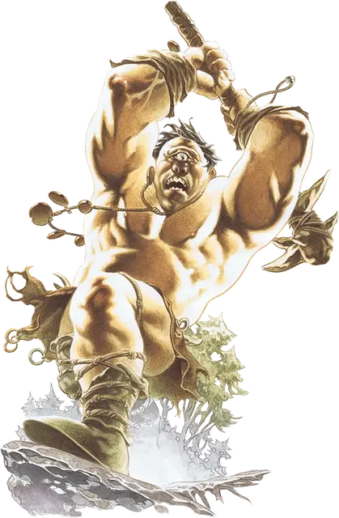

Циклоп
Cyclops
Огромный Великан, хаотично-нейтральный

Класс Доспеха 14 (природный доспех)
Хиты 138 (12к12 + 60)
Скорость 30 футов
| мод | спас | ||
|---|---|---|---|
| СИЛ | 22 | +6 | +6 |
| ЛОВ | 11 | +0 | +0 |
| ТЕЛ | 20 | +5 | +5 |
| мод | спас | ||
|---|---|---|---|
| ИНТ | 8 | −1 | −1 |
| МДР | 6 | −2 | −2 |
| ХАР | 10 | +0 | +0 |
Чувства пассивное Восприятие 8
Языки Великаний
Опасность 6 (2300 опыта)
Бонус мастерства +3
Среда обитания Горы, Луг, Побережье, Подземье, Холмы
Особенности
Плохое восприятие глубины. Циклоп совершает с помехой броски атаки по цели, находящейся на расстоянии более 30 футов.
Действия
Мультиатака. Циклоп совершает две атаки палицей.
Палица. Рукопашная атака оружием: +9 к попаданию, досягаемость 10 футов, одна цель. Попадание: Дробящий урон 19 (3к8 + 6).
Камень. Дальнобойная атака оружием: +9 к попаданию, дистанция 30/120 футов, одна цель. Попадание: Дробящий урон 28 (4к10 + 6).
Описание
Циклопы это одноглазые великаны, влачащие жалкое существование в диких землях. Будучи замкнутыми по своей природе, они избегают контакта с остальными расами и стараются изгонять чужаков со своих территорий.
Нерелигиозные. Легенды гласят, что циклопы являются порождением одного из богов великанов, но эти существа почти не уделяют внимания каким либо божествам. Они видят мало пользы в молитвах и не любят ритуалы, которые считают сложными и непонятными. Однако, циклопы, почуявшие ощутимую выгоду из некоторого места божественной силы, или те, которым угрожает какая либо сверхъестественная сила или сущность, будут воздавать богам, пока существует выгода или угроза.
Простые. Хотя циклопы и достаточно умные, они живут простыми, затворническими жизнями, разводя стада животных для пропитания. Они предпочитают жить в одиночку или небольшими семейными группами, обитая в пещерах, руинах или в грубых сооружениях из самостоятельно построенных сухих каменных конструкций. Циклопы загоняют стада на ночь в свое жилище, заваливая вход булыжниками, и используют свой дом как сарай.
Жилища циклопов расположены в дне пути друг от друга, так что они могут встречаться для торговли товарами или поиска помощников. Они создают оружие и инструменты из дерева и камня, но будут использовать металл, если смогут его найти. И хотя циклопы понимают Великаний язык, они ничего не пишут и мало говорят, используя для взаимодействия друг с другом хрюканье и жесты.
Циклопы не используют деньги для торговли, но ценят золото, ракушки и другие сверкающие и разноцветные предметы, как ювелирные изделия. Циклопы могут носить ожерелья с нанизанными на них перьями и серебряными монетами, а также вместе с оловянными кубками, столовыми приборами и всякими металлическими обломками.
Глупые. Циклопы не являются великими мыслителями или стратегами. Медленно соображающие и привязанные к своему обычному образу жизни, они находят нововведения трудными. И хотя они представляют огромную угрозу в бою благодаря размеру и силе, они зачастую могут быть обмануты умными противниками.
Циклопы могут испытывать страх или благоговение перед явными проявлениями магии. Простаки, увидев небольшое проявление магии, могут по ошибке принять колдуна, жреца или другого заклинателя за могущественную божественную личность. Однако их чувство гордости заставляет их реагировать с мстительной, кровавой жестокостью, когда они узнают, что тот, кого они считали «богом», является простым смертным.